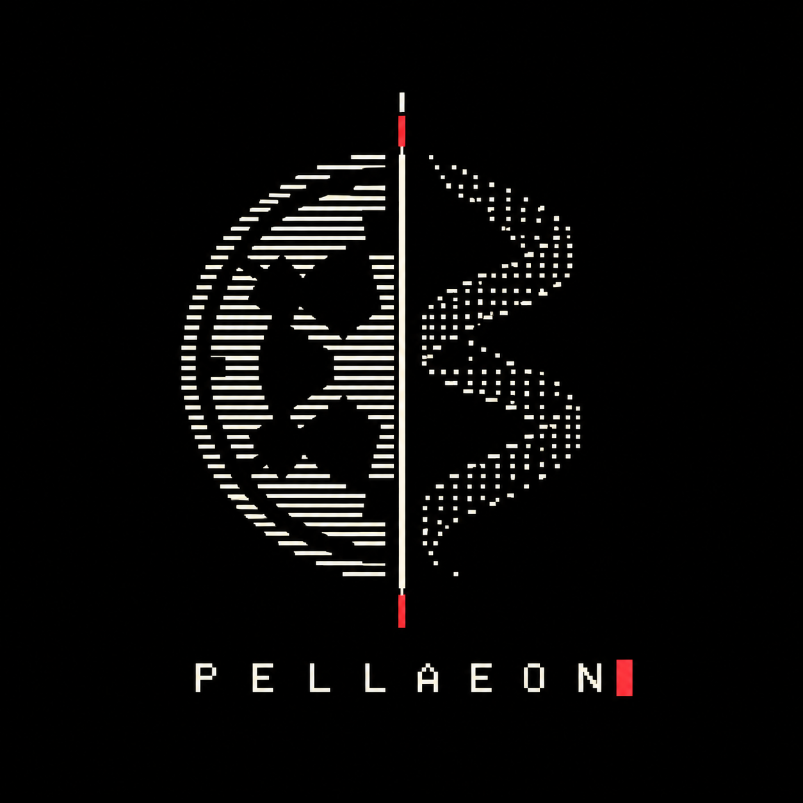
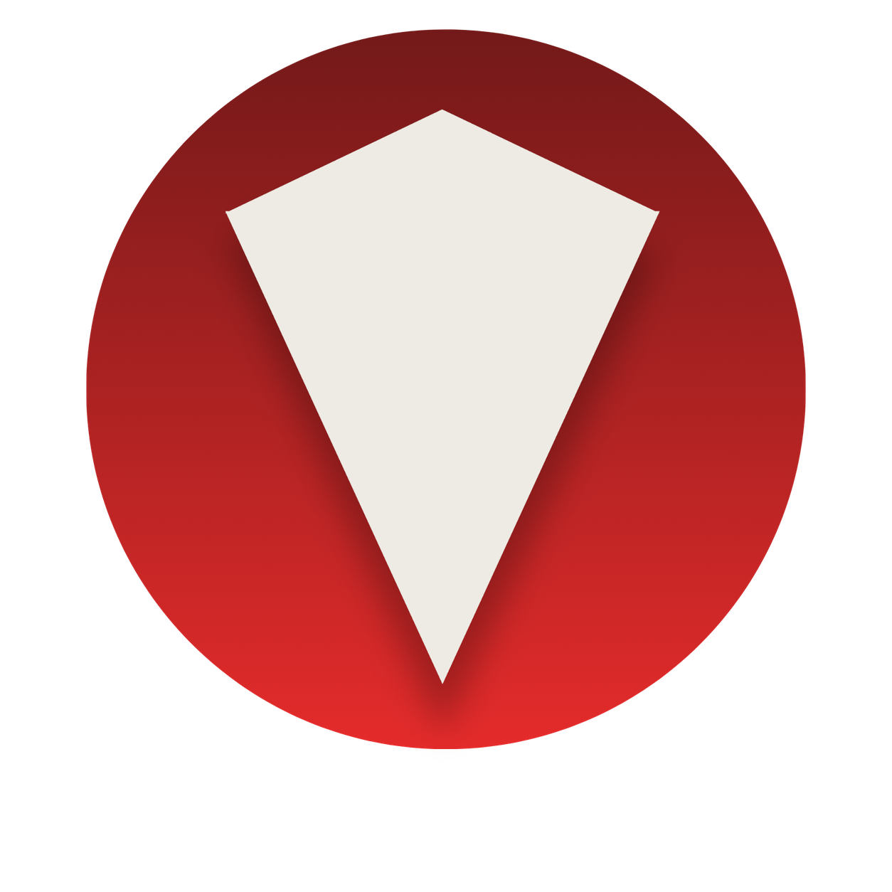
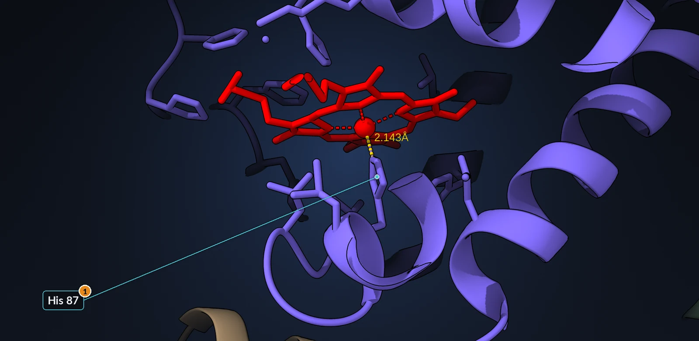
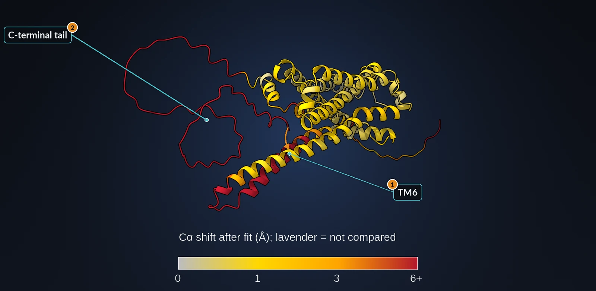
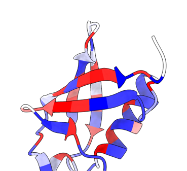
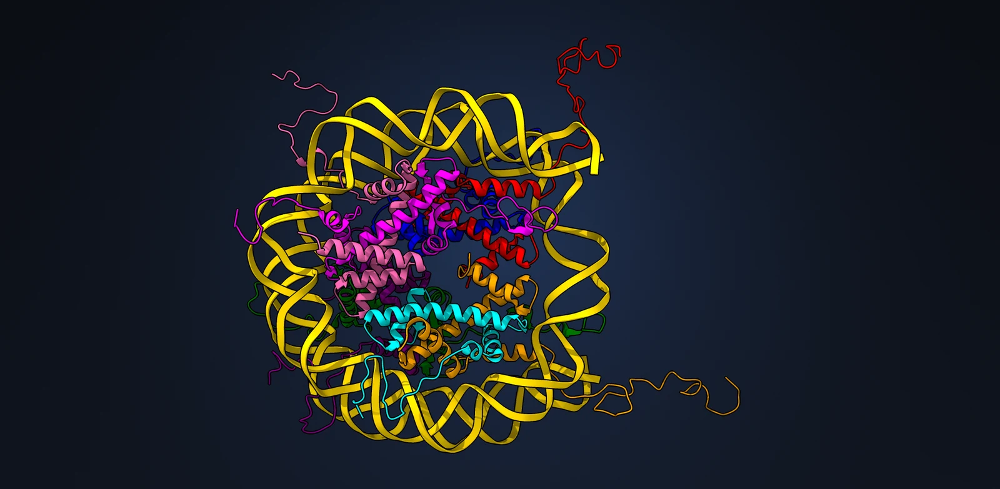

New Pellaeon is in the ChimeraX Toolshed
Talk to ChimeraX in plain English.
Open structures, inspect residues, compare models, and make figures from a chat panel inside ChimeraX. See the commands Pellaeon runs and copy or reuse them.
toolshed install ChimeraX-Pellaeon
Paste into ChimeraX's command line, or install it from Tools ▸ More Tools… without typing anything. Other ways to install
Three steps
- Install the panel. Paste the line above into ChimeraX's command line, or open Tools ▸ More Tools… and press Install next to Pellaeon. Details
- Connect a model. Sign in with a ChatGPT account, paste a key for a cloud provider, or point Pellaeon at Ollama on your computer. Local or cloud
- Run the built-in test request. A button on the settings page opens ubiquitin and colors it by chain.
Setup steps: install guide. Choosing a local or cloud model: model guidance. With the default confirmation setting, file writes and destructive actions wait for your approval.
How it works
Pellaeon uses your current session and ChimeraX documentation to turn requests into commands. Each command is shown, and errors are returned to the model for correction.
Using Claude Desktop or Cursor with ChimeraX's own mcp command? How the two differ, and how they work together. · How can I use an LLM inside UCSF ChimeraX?
Where it fails
The model works from the session state and the log; it does not see the 3D view. Small local models pick the wrong chain, hide what they just showed, or answer a question by running commands. A specific request ("color chain B of #2 red") does better than a general one. Every command is shown, so a wrong one is easy to spot, and Undo takes the last request back. Scores by model are on the tested models page.
Reading a command
Every reply shows the ChimeraX commands it ran. Tap or focus on a part to see what it means.
model 1, chain A, residue 113, colored blue
What you can do
Explore a structure
Ask which structures exist for a protein and open the best-resolved one. Select a residue, inspect its neighbours, measure distances, or add annotations.


Compare conformations
Superpose structures and inspect residue displacements and contact differences.


Map your data
Import a residue-score table, check its numbering, and color the structure by value or category.


Save figures and views
Export images with their recorded commands and sources. Save views and reuse figure styles.


See it work
Recorded in ChimeraX with the panel docked; waits are sped up and marked. No sound.
Two editions
The ChimeraX edition is a native bundle with a docked panel (install it); the classic edition drives UCSF Chimera 1.x through its REST server and shows the panel in your browser (classic edition). Both editions share the chat interface and model providers. Table overlays and some analysis tools are ChimeraX-only: see the feature differences.
Privacy
With a local Ollama server, model requests are processed on your computer. Fetching structures and annotations still contacts external databases (PDB, AlphaFold DB, 3D-Beacons, UniProt, ClinVar, ConSurf-DB). With a cloud provider, your request, the list of open models, the current selection, the commands you ran by hand in ChimeraX since your previous request (with their output) and any table you loaded are sent to that provider. Screenshots are shared only when the review-the-view option is enabled in Settings.
Command corrections Pellaeon learns (a refused command and the one that ran instead) stay in learned.json on your computer; sharing them with the project is a button that copies them and opens an empty page for you to paste into, and nothing is sent otherwise. Keys are stored on your computer, never in ChimeraX sessions. Privacy detail, including the free tiers · Where things are stored